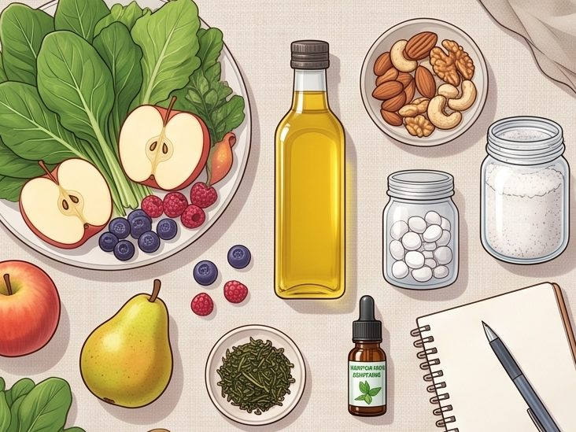
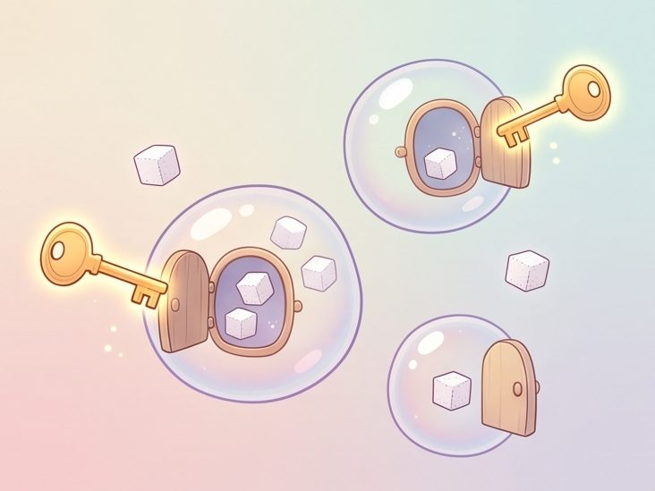

Hành trình Nhịn ăn
Bản đồng hành khi thực hành. Nhập giờ bạn bắt đầu nhịn để biết lúc này nên làm gì, bữa tới ăn gì, cơ thể đang ở chặng nào; đếm nước và ghi lại cảm nhận. Nội dung theo tài liệu của chương trình.
- Ba chặng: tuần chuẩn bị, Ngày 1 giảm ăn, rồi những giờ nhịn.
- Ngày 1: chỉ ăn bữa chính, không ăn vặt, uống 1,5–2 lít nước. Ăn rau củ quả, ngũ cốc nguyên hạt, khoai, hạt, dầu ép lạnh; ngừng sữa, thịt cá trứng, đậu, đường, cà phê, trà, rượu bia.
- Khi nhịn: uống nước; có sẵn magie, tinh dầu bạc hà, trà xanh, muối biển, nước hầm gà cho lúc khó chịu.
- Có câu hỏi hay biểu hiện lạ trên cơ thể: liên lạc người hướng dẫn.
Lịch của bạn
Chuẩn bị cho cơ thể và tâm trí
Trí óc ở đó để bảo vệ bạn, và nó đặc biệt sợ những gì chưa từng biết. Hãy cho nó sự an ủi, sự bảo đảm rằng mọi chuyện sẽ ổn, để não bộ hợp tác với cơ thể.

Nhịn ăn không chỉ là trải nghiệm thuần tuý về cơ thể; nó còn liên quan tới trí não và tâm hồn. Có thể bạn sẽ nhìn rõ hơn tâm trí mình, rồi “đứt đoạn” với những thói quen ăn uống muốn giã từ từ lâu.Tin nhắn tuần chuẩn bị
Vì sao mình nhịn lần này?
Viết ra đây. Trang sẽ nhắc lại câu trả lời của bạn vào những giờ khó. Chỉ lưu trên máy của bạn.
Danh sách chuẩn bị
Ngoài rau củ quả, dầu ép lạnh là bắt buộc, những thứ còn lại có hay không tuỳ bạn sẵn sàng hỗ trợ cơ thể đến đâu; có đủ thì việc nhịn hiệu quả và đỡ mệt nhất. Tiến độ lưu trên máy của bạn.
Nước hầm xương gà
Ai không nên nhịn
Theo tài liệu: nhịn ăn cần làm đúng cách, có hướng dẫn của chuyên gia. Làm bừa bãi thì có thể thành bạo hành cơ thể thay vì mang lại lợi ích.
Lưu ý chung, không có trong tài liệu: đang dùng thuốc hằng ngày (nhất là thuốc tiểu đường) hoặc có bệnh mạn tính thì hỏi bác sĩ trước khi nhịn.
Ngày giảm ăn
Món này ăn được không?
Năm nhóm được ăn
Chất béo duy nhất là dầu thực vật ép lạnh chất lượng tốt, rưới lên rau củ.
Ngừng ăn từ Ngày 1
Ăn chậm, nhai kỹ
Quan trọng không chỉ là ăn gì, mà là ăn như thế nào. Ăn nhiều mà không hấp thu được thì lượng cũng chẳng để làm gì.
Bữa ăn chậm 20 phút
Bấm bắt đầu khi ngồi vào bàn. Vài phút trang sẽ nhắc bạn một điều nhỏ.
Não chỉ nhận được tín hiệu no khoảng 20 phút sau khi bắt đầu ăn.
Khi bạn nhịn
Khi ngừng ăn, cơ thể không ngừng làm việc: nó tìm “plan B” và tự nuôi mình từ bên trong, lần lượt qua ba nguồn năng lượng. Mỗi chặng dài ngắn tuỳ thể tạng từng người.
Theo từng giờ
Trong lúc nhịn
Hộp hỗ trợ khi khó chịu
Chọn điều bạn đang gặp để biết dùng đồ chuẩn bị nào, theo danh sách của chương trình.
Báo người hướng dẫn
Có câu hỏi, thắc mắc hay biểu hiện khác lạ trên cơ thể: liên lạc người hướng dẫn. Lắng nghe cơ thể và thực hành nhịn ăn một cách an toàn, có ý thức.
Lưu ý chung, không có trong tài liệu: ngất, đau ngực, khó thở, lú lẫn hay nôn liên tục thì dừng nhịn và đi khám ngay.
Phá nhịn
Giữ lại thói quen tốt
Hiểu thêm
Tóm tắt ngắn tài liệu lý thuyết và bộ ảnh về insulin của chương trình.

Insulin, hormone của dự trữ
Insulin cao kéo dài:
Nhịn ăn giúp:
Điều bạn cần biết
Ta hay ăn vì đâu?
Ngoài cái đói thật, ta thường ăn vì những lý do khác:
Hãy nhớ rằng, cơ thể chúng ta không chỉ cần được thanh lọc, mà còn cần được chăm sóc thận trọng, hợp lý và thương yêu.Tài liệu lý thuyết về nhịn ăn